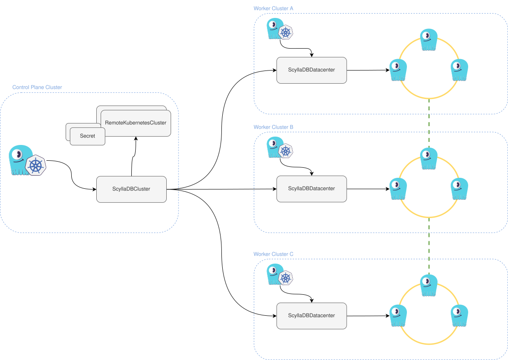

Was this page helpful?
Caution
You're viewing documentation for a deprecated version of ScyllaDB Operator. Switch to the latest stable version.
ScyllaDBClusters¶
Introduction¶
The ScyllaDBCluster resource defines a multi-datacenter ScyllaDB cluster that can span multiple geo-distributed Kubernetes clusters. This section provides an overview of its structure and demonstrates how to perform basic configurations and access the APIs. It is not intended as a comprehensive guide to all capabilities. For a full list of available options, refer to the generated API reference.
Caution
ScyllaDBCluster is considered as a technical preview, which means users should be cautious when using it on environments other than development.
Tip
You can always see the currently supported API fields for a particular version installed in your cluster by running
kubectl explain --api-version='scylla.scylladb.com/v1alpha1' ScyllaDBCluster.spec
Creating a ScyllaDBCluster¶
Prerequisites¶
This document outlines the process of deploying a multi-datacenter ScyllaDB cluster. Before proceeding, ensure that the necessary infrastructure is in place. We assume you have four interconnected Kubernetes clusters that can communicate with each other using Pod IPs. These clusters are categorized as follows:
Control Plane cluster – Manages the entire ScyllaDB cluster.
Worker clusters – Host the ScyllaDB datacenters.
Note
The Control Plane cluster does not have to be a separate Kubernetes cluster. One of the Worker clusters can also serve as the Control Plane cluster.
Select one cluster to act as the Control Plane and install Scylla Operator along with its prerequisites. The remaining clusters will serve as Worker clusters and must meet the following criteria:
Include a dedicated node pool for ScyllaDB nodes, consisting of at least three nodes deployed across different zones (each with a unique
topology.kubernetes.io/zonelabel), configured for ScyllaDB, and labeled withscylla.scylladb.com/node-type: scylla.Have Scylla Operator and its prerequisites installed.
Run a storage provisioner capable of provisioning XFS volumes with the StorageClass
scylladb-local-xfson each node dedicated to ScyllaDB.
For guidance on setting up such infrastructure, refer to one of the following resources:
Performance tuning¶
To achieve optimal performance and low latency, ensure that automatic tuning is enabled.
We recommend reviewing our tuning architecture documentation and becoming familiar with the NodeConfig resource.
A NodeConfig resource should be deployed in each Worker cluster.
Control Plane access¶
The Control Plane cluster, along with Scylla Operator running in it, must have access to the Worker clusters to reconcile the datacenters.
To abstract the connection details, you’ll create a RemoteKubernetesCluster resource in the Control Plane cluster for each Worker cluster.
Refer to the RemoteKubernetesCluster documentation for instructions on setting up credentials.
In this guide, we assume that the credential Secrets are placed in the remotekubernetescluster-credentials namespace.
However, you are free to use your own naming conventions.
Create three RemoteKubernetesCluster resources in the Control Plane cluster—one for each Worker cluster.
apiVersion: scylla.scylladb.com/v1alpha1
kind: RemoteKubernetesCluster
metadata:
name: dev-us-east-1
spec:
kubeconfigSecretRef:
name: dev-us-east-1
namespace: remotekubernetescluster-credentials
apiVersion: scylla.scylladb.com/v1alpha1
kind: RemoteKubernetesCluster
metadata:
name: dev-us-central-1
spec:
kubeconfigSecretRef:
name: dev-us-central-1
namespace: remotekubernetescluster-credentials
apiVersion: scylla.scylladb.com/v1alpha1
kind: RemoteKubernetesCluster
metadata:
name: dev-us-west-1
spec:
kubeconfigSecretRef:
name: dev-us-west-1
namespace: remotekubernetescluster-credentials
Forcing a rolling restart¶
When you change a ScyllaDB config option that’s not live reloaded by ScyllaDB, or want to trigger a rolling restart for a different reason,
ScyllaDBCluster allows triggering the rolling restarts declaratively by changing ScyllaDBCluster.spec.forceRedeploymentReason to any other value.
This will trigger a rolling restart of all ScyllaDB nodes,
always respecting the PodDisruptionBudget of given datacenter, keeping the cluster available.
Next steps¶
To follow up with other advanced topics, see the section index for options.